<div class="rh-site"><div class="page exact-home">
    <h1 class="sr-only">RETORIA HOME, текстиль для уюта</h1>
    <section class="exact-hero" aria-label="Главный экран RETORIA HOME">
      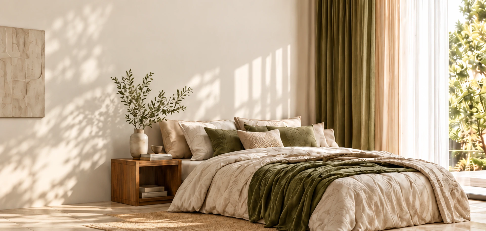
      <h2 class="exact-live-title"><span>RETORIA</span> <span class="exact-live-title-home"><i>HO</i><i>ME</i></span></h2>
      <div class="exact-live-copy"><p>Готовое интерьерное решение,<br>которое делает ваш дом теплее</p><a href="/collection/all">Перейти в каталог <span>→</span></a></div>

    <nav class="exact-live-categories" aria-label="Категории каталога"><a href="/collection/shtory">Шторы</a><a href="/collection/tyul">Тюль</a><a class="all" href="/collection/all">Смотреть каталог <span>→</span></a></nav></section>

    <section class="exact-section exact-intro home-shell" id="collections">
      <div class="exact-intro-head reveal"><h2>Текстиль, который<br>создаёт атмосферу<br>вашего дома</h2><div><p>Выберите стиль, цвет и размер. Тюль, шторы и аксессуары уже сочетаются между собой.</p><a class="exact-button" href="/collection/komplekty-na-okno">Подобрать готовое решение <span>→</span></a></div></div>
      <div class="exact-category-stage" data-category-gallery="">
        <div class="exact-category-track" data-category-track=""><a class="exact-category-slide" href="/collection/tyul">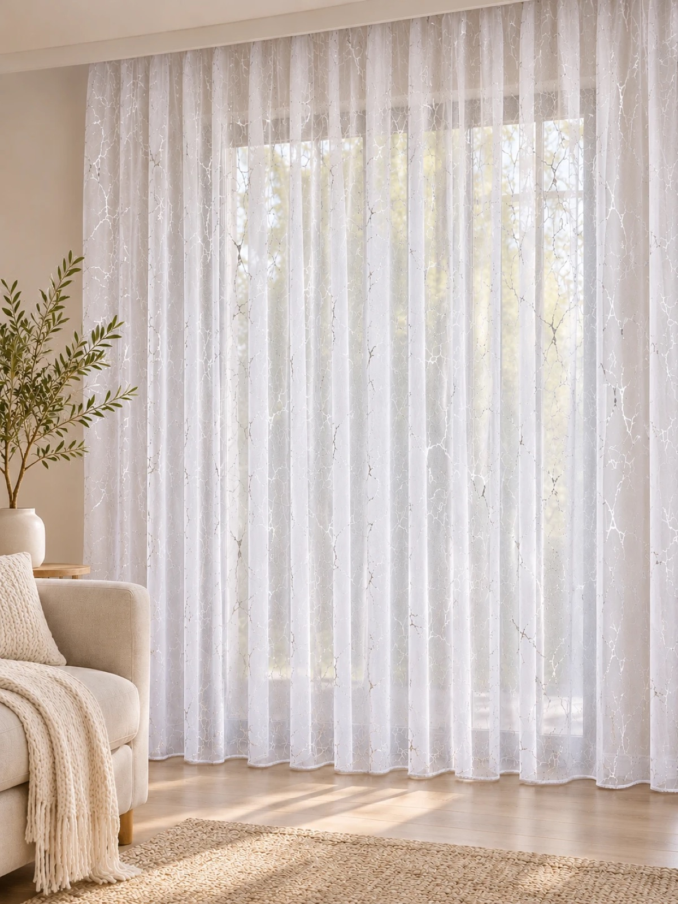<div class="exact-category-shade"></div><div class="exact-category-slide-copy"><span>01</span><h3>Тюль под лён</h3><p>Мягкий свет и приватность для спокойного дома</p><div><strong>от 1&nbsp;099 ₽</strong><b>Смотреть <i>→</i></b></div></div></a><a class="exact-category-slide" href="/collection/komplekty-na-okno">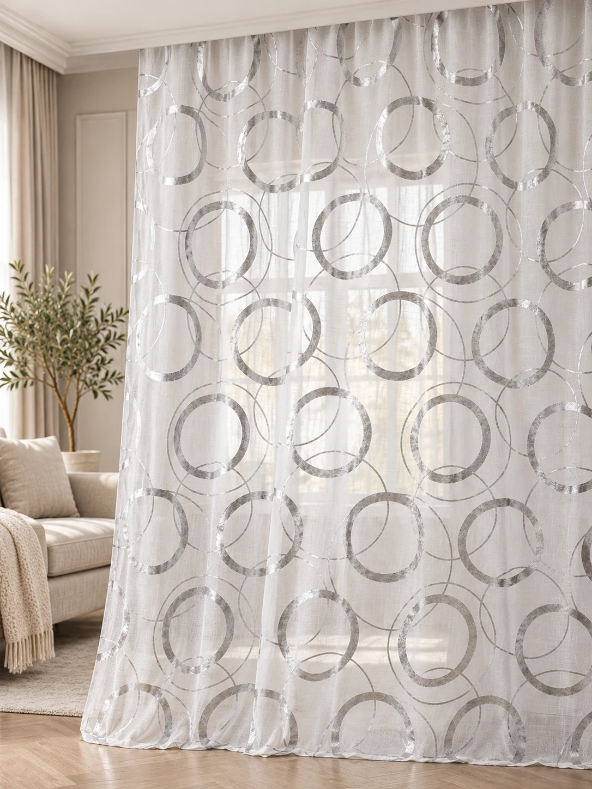<div class="exact-category-shade"></div><div class="exact-category-slide-copy"><span>02</span><h3>Комплекты на окно</h3><p>Тюль и шторы, которые уже сочетаются между собой</p><div><strong>от 8&nbsp;697 ₽</strong><b>Смотреть <i>→</i></b></div></div></a><a class="exact-category-slide" href="/product/tyul-s-lambrekenom-dlya-kuhni-belyy-s-serebristymi-prozhilkami">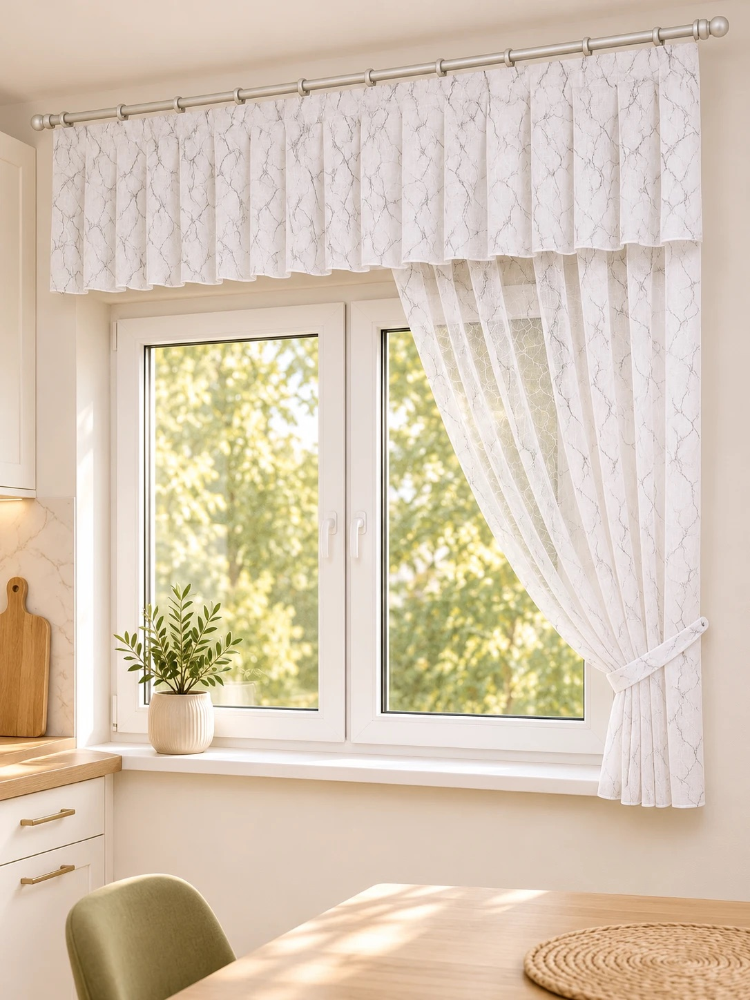<div class="exact-category-shade"></div><div class="exact-category-slide-copy"><span>03</span><h3>Тюль для кухни</h3><p>Короткий тюль с ламбрекеном для небольших окон</p><div><strong>от 1&nbsp;099 ₽</strong><b>Смотреть <i>→</i></b></div></div></a><a class="exact-category-slide" href="/collection/shtory">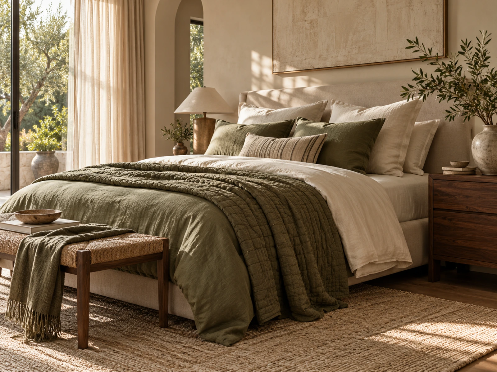<div class="exact-category-shade"></div><div class="exact-category-slide-copy"><span>04</span><h3>Шторы блэкаут</h3><p>Плотный бархат для спокойного сна</p><div><strong>от 3&nbsp;499 ₽</strong><b>Смотреть <i>→</i></b></div></div></a></div>
        <div class="exact-category-controls"><span data-category-current="">01</span><div><i data-category-progress=""></i></div><span>04</span><button data-category-prev="" aria-label="Предыдущая категория">←</button><button data-category-next="" aria-label="Следующая категория">→</button></div>
      </div>
    </section>

    <section class="exact-section exact-rooms home-shell" id="rooms">
      <div class="exact-section-head"><h2>Подборки для вашего интерьера</h2><a href="/collection/komplekty-na-okno">Смотреть все решения <span>→</span></a></div>
      <div class="exact-room-grid"><article class="exact-room reveal"><a class="exact-room-photo" href="/product/komplekt-molniya-tyul-shtory-blekaut-chyornye"></a><h3>Спальня</h3><p>Темнота для спокойного сна: чёрные шторы блэкаут и белый тюль с одним рисунком «Молния».</p><div><strong>от 8&nbsp;697 ₽</strong><a href="/product/komplekt-molniya-tyul-shtory-blekaut-chyornye" aria-label="Открыть подборку Спальня">→</a></div></article><article class="exact-room reveal"><a class="exact-room-photo" href="/product/komplekt-molniya-tyul-shtory-blekaut-chyornye">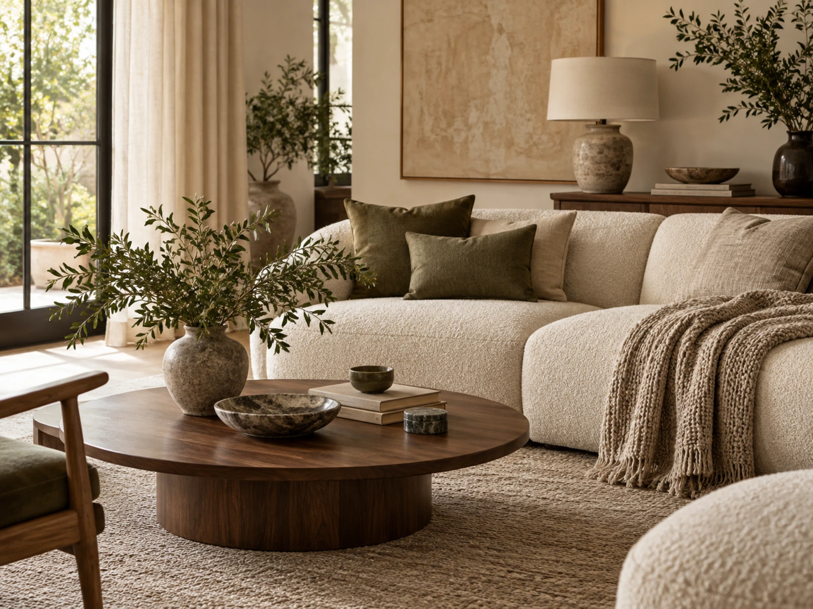</a><h3>Гостиная</h3><p>Белый тюль и чёрные бархатные шторы с одним рисунком «Молния»: светло днём, уютно вечером.</p><div><strong>от 8&nbsp;697 ₽</strong><a href="/product/komplekt-molniya-tyul-shtory-blekaut-chyornye" aria-label="Открыть подборку Гостиная">→</a></div></article><article class="exact-room reveal"><a class="exact-room-photo" href="/product/tyul-pod-lyon-zvezda-belyy-s-utyazhelitelem">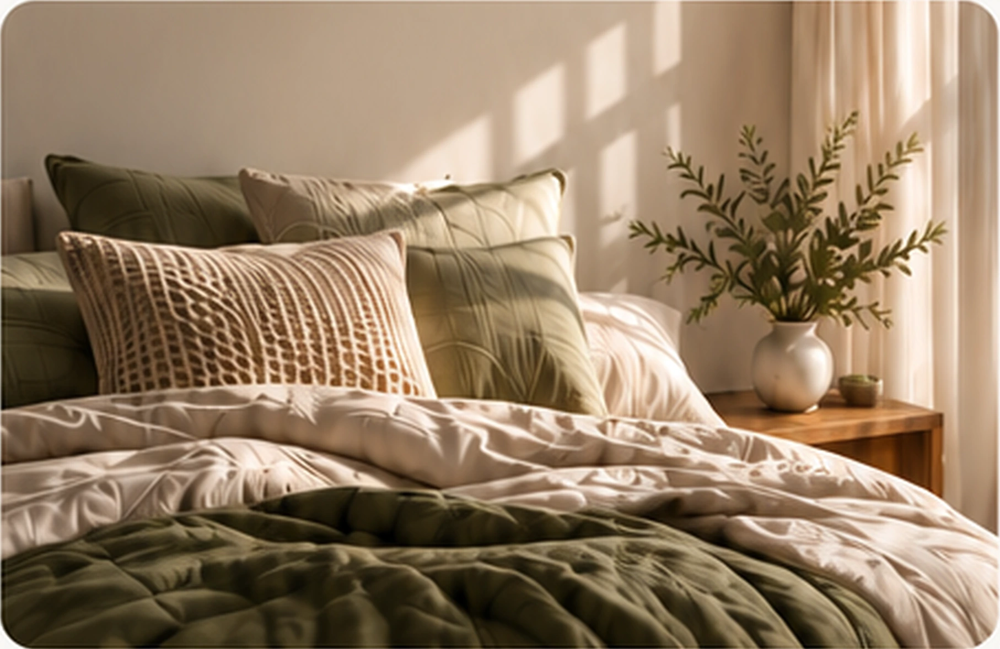</a><h3>Детская</h3><p>Лёгкий тюль со звёздами: мягкий свет днём и уютное настроение.</p><div><strong>от 1&nbsp;699 ₽</strong><a href="/product/tyul-pod-lyon-zvezda-belyy-s-utyazhelitelem" aria-label="Открыть подборку Детская">→</a></div></article><article class="exact-room reveal"><a class="exact-room-photo" href="/product/tyul-s-lambrekenom-dlya-kuhni-belyy-s-serebristymi-prozhilkami">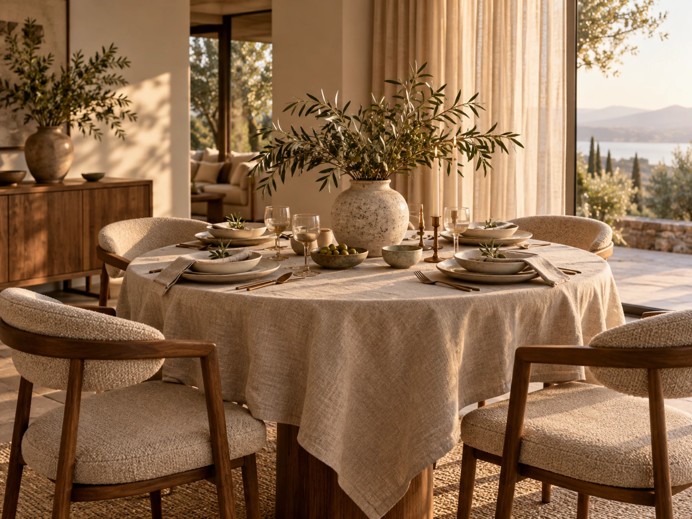</a><h3>Кухня</h3><p>Короткий тюль с ламбрекеном для небольшого окна.</p><div><strong>от 1&nbsp;130 ₽</strong><a href="/product/tyul-s-lambrekenom-dlya-kuhni-belyy-s-serebristymi-prozhilkami" aria-label="Открыть подборку Кухня">→</a></div></article></div>
    </section>

    <section class="exact-section exact-buy-ways home-shell">
      <div class="exact-section-head"><div><p class="exact-kicker">Выберите удобный вариант</p><h2>Три способа купить</h2></div></div>
      <div class="exact-buy-grid">
        <article class="exact-buy-card reveal"><span>01</span><div><h3>Готовые размеры</h3><p>Выберите модель и размер из наличия. Отправим заказ без ожидания пошива.</p></div><a href="/collection/all">Перейти в каталог <b>→</b></a></article>
        <article class="exact-buy-card reveal"><span>02</span><div><h3>По своим размерам</h3><p>Укажите ширину и высоту — сошьём текстиль точно под ваше пространство.</p></div><a href="/page/contacts">Рассчитать заказ <b>→</b></a></article>
        <article class="exact-buy-card reveal"><span>03</span><div><h3>Помощь мастера по фото</h3><p>Пришлите фотографию окна. Проверим замеры и подскажем подходящее решение.</p></div><a href="/page/contacts">Получить консультацию <b>→</b></a></article>
      </div>
    </section>

    <section class="exact-benefits home-shell reveal" aria-label="Преимущества RETORIA HOME">
      <div><i><svg class="icon" viewBox="0 0 24 24"><path d="M3 6h11v11H3zM14 10h4l3 3v4h-7z"></path><circle cx="7" cy="18" r="2"></circle><circle cx="18" cy="18" r="2"></circle></svg></i><span>Бесплатная доставка<br>при заказе от 9&nbsp;000 ₽</span></div>
      <div><i><svg viewBox="0 0 24 24" aria-hidden="true"><path d="M20 4C10 4 5 9 5 15c0 3 2 5 5 5 6 0 10-6 10-16Z"></path><path d="M4 21c2-6 6-10 12-13"></path></svg></i><span>Натуральные<br>и безопасные материалы</span></div>
      <div><i><svg viewBox="0 0 24 24" aria-hidden="true"><path d="m4 8 4-5h8l4 5-8 13L4 8Z"></path><path d="m4 8 8 4 8-4M8 3l4 9 4-9"></path></svg></i><span>Гарантия 60 дней<br>на заводской брак</span></div>
      <div><i><svg viewBox="0 0 24 24" aria-hidden="true"><path d="M4 8V3m0 0h5M4 3l4 4a8 8 0 1 1-2 9"></path></svg></i><span>Удобный возврат<br>в течение 14 дней</span></div>
    </section>

    <section class="exact-section exact-touch home-shell"><div class="exact-touch-grid"><div class="reveal"><h2>Дом начинается<br>с прикосновения</h2><p>Натуральные ткани для тихого, уютного дома.</p><a href="/collection/tyul">О материалах <span>→</span></a></div></div></section>

    <section class="exact-section exact-ai-wrap home-shell"><div class="exact-ai reveal"><div class="exact-ai-copy"><p class="exact-kicker">Увидеть до покупки</p><h2>Примерьте наш текстиль<br>в своём интерьере</h2><p>Загрузите фото комнаты, выберите текстиль,<br>и AI покажет, как он будет выглядеть у вас дома.</p><a class="exact-button" href="/page/contacts">Попробовать AI-примерку</a><div class="exact-ai-steps"><span>Ваше фото</span><span>Текстиль из каталога</span><span>Результат за минуту</span></div></div><div class="exact-ai-image"><div class="comparison" data-comparison="">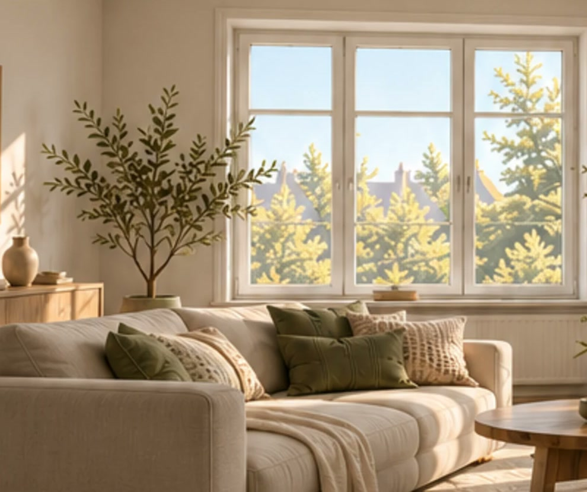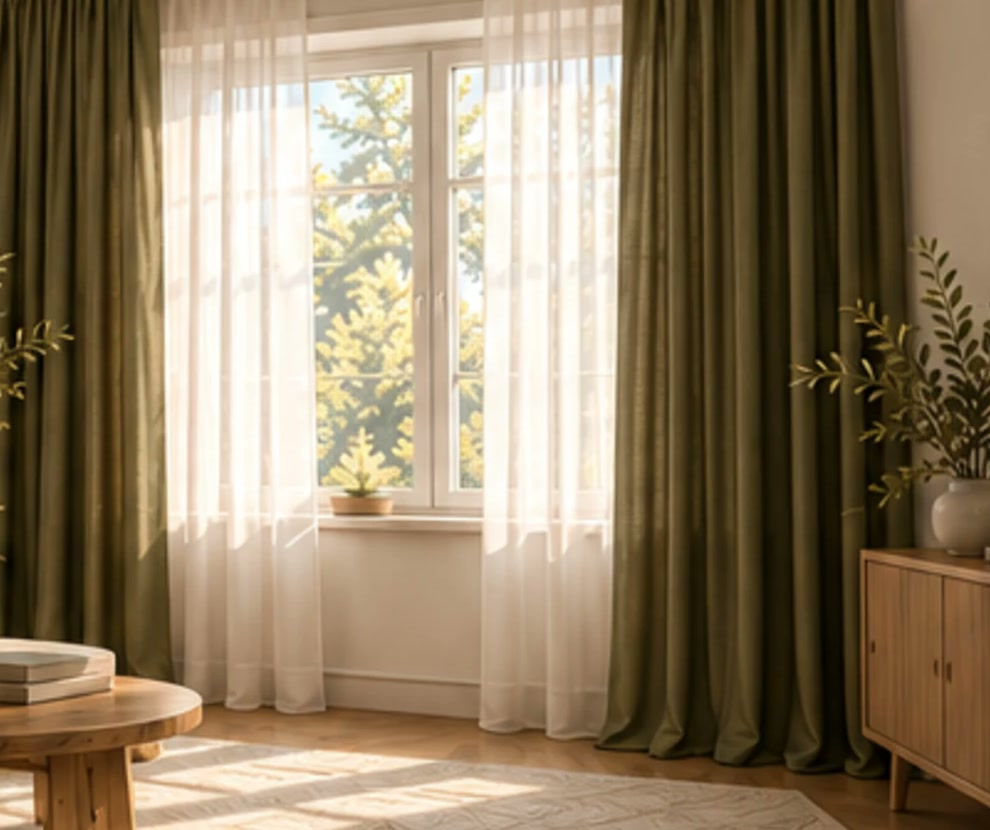<span class="compare-label before">До</span><span class="compare-label after-label">После</span><span class="comparison-line"></span><span class="comparison-handle" aria-hidden="true">↔</span><input class="compare-range" type="range" min="4" max="96" value="50" aria-label="Сравнить до и после примерки"></div></div></div></section>

    <section class="exact-section exact-process home-shell">
      <div class="exact-section-head"><div><p class="exact-kicker">От идеи до готового изделия</p><h2>Как мы работаем</h2></div></div>
      <div class="exact-process-grid">
        <article class="exact-process-step reveal"><span>01</span><h3>Выбор ткани</h3><p>Подбираем фактуру, оттенок и плотность под ваш интерьер.</p></article>
        <article class="exact-process-step reveal"><span>02</span><h3>Замер</h3><p>Вы снимаете размеры самостоятельно или с помощью мастера.</p></article>
        <article class="exact-process-step reveal"><span>03</span><h3>Проверка мастером</h3><p>Перед пошивом специалист проверяет все параметры заказа.</p></article>
        <article class="exact-process-step reveal"><span>04</span><h3>Пошив и доставка</h3><p>Шьём изделие, проводим контроль и бережно доставляем домой.</p></article>
      </div>
    </section>

    <section class="exact-section exact-production home-shell">
      <div class="exact-production-card reveal">
        <div class="exact-production-copy"><p class="exact-kicker">Контроль на каждом шаге</p><h2>Каждое изделие проходит шесть этапов</h2><ol><li><span>01</span>Проверка замеров</li><li><span>02</span>Раскрой</li><li><span>03</span>Пошив</li><li><span>04</span>Отпаривание</li><li><span>05</span>Контроль швов и размеров</li><li><span>06</span>Упаковка</li></ol><a class="exact-button exact-production-link" href="/page/about-us">Узнать больше о производстве <span>→</span></a></div>
        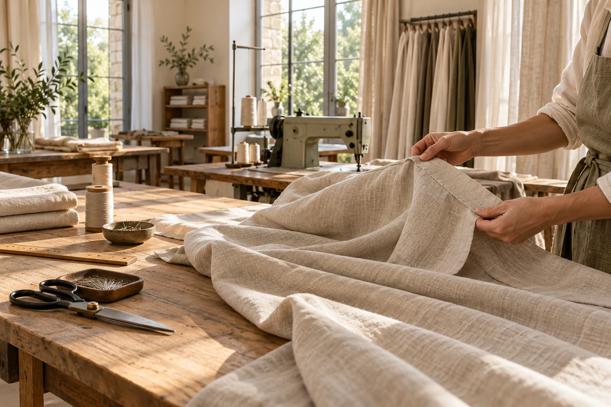
      </div>
    </section>


    <section class="exact-section exact-faq home-shell">
      <div class="exact-section-head"><div><p class="exact-kicker">Коротко о важном</p><h2>Вопросы и ответы</h2></div><a href="/page/delivery">Все вопросы <span>→</span></a></div>
      <div class="exact-faq-list"><details class="reveal"><summary>Сколько времени занимает изготовление?<span>＋</span></summary><p>Готовые размеры отправляем со склада. Изделия по вашим размерам шьём после подтверждения замеров мастером; точный срок называем до оплаты и отдельно указываем срок доставки.</p></details><details class="reveal"><summary>Как правильно замерить окно?<span>＋</span></summary><p>Карниз лучше установить заранее. Ширину измеряйте между крайними крючками, высоту — от точки крепления до пола в трёх местах. Подробная схема — на странице «Как замерить».</p></details><details class="reveal"><summary>Можно ли вернуть товар?<span>＋</span></summary><p>Условия различаются для готовых изделий, изделий по индивидуальным размерам, брака и повреждения при доставке. Подробно — в разделе «Возврат и обмен».</p></details><details class="reveal"><summary>Что такое блэкаут?<span>＋</span></summary><p>Это плотная ткань, которая не пропускает свет. 100% — комната тёмная даже днём; 85–95% — мягкий полумрак, контуры предметов видны.</p></details><details class="reveal"><summary>Сколько ткани нужно?<span>＋</span></summary><p>Ширина ткани до сборки больше ширины карниза в 1,5–2,5 раза — это коэффициент сборки, он зависит от крепления. Точный расход посчитает калькулятор или мастер.</p></details><details class="reveal"><summary>Можно ли сшить модель по моим размерам?<span>＋</span></summary><p>Да. В карточке нажмите «Сшить по своим размерам» — калькулятор откроется с уже выбранной тканью и цветом.</p></details><details class="reveal"><summary>Почему цена предварительная?<span>＋</span></summary><p>Итог зависит от точных размеров, крепления и комплектации. Мастер подтверждает цену до раскроя.</p></details></div>
    </section>

    <section class="exact-newsletter home-shell reveal"><div><h2>Письма о доме и уюте</h2><p>Новинки, вдохновение и специальные предложения<br>на вашей почте.</p></div><form data-demo-form=""><input type="email" required="" placeholder="Ваш e-mail" aria-label="Ваш e-mail"><button>Подписаться</button><small class="newsletter-consent">Нажимая «Подписаться», вы соглашаетесь с <a href="/page/oferta">политикой обработки данных</a></small></form></section>
  </div></div>

